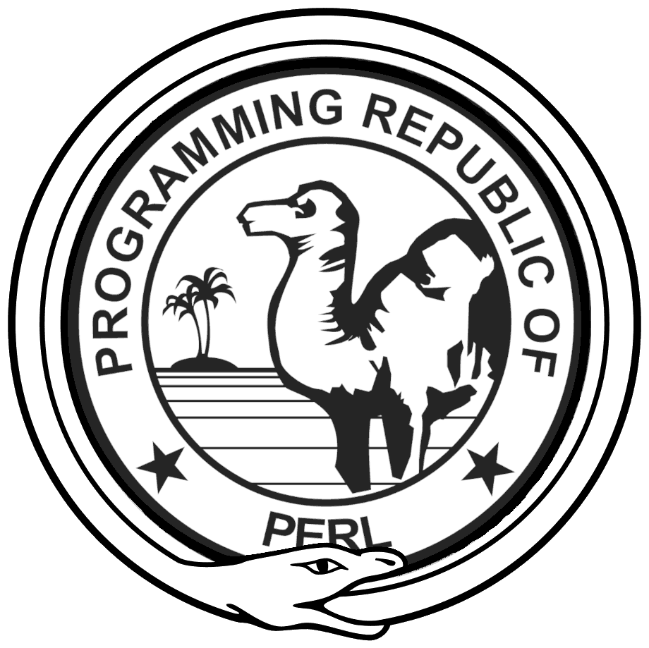
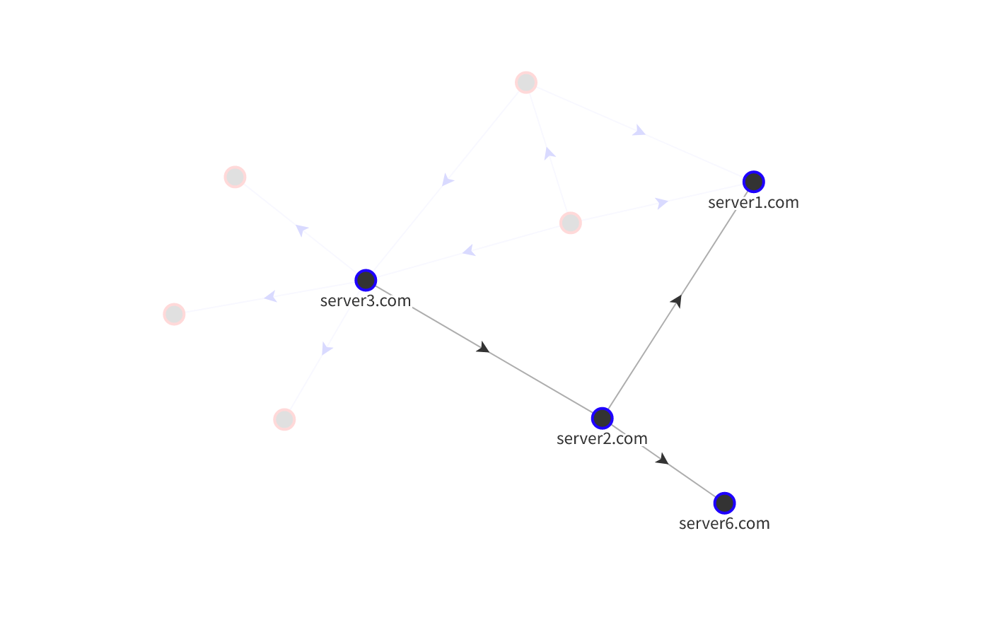
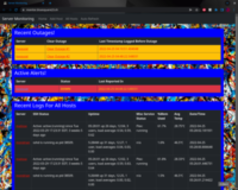
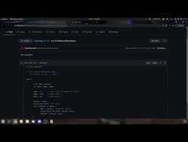

Perl Quine
A perl script that prints its own source. Insipired by Ken Thomson's Turing award lecture, "Reflections on Trusting Trust."
Distributed Fractal Generation W/ Java
Created a number of 4K Mandelbrot timelapses using my friends custom distributed fractal generator java app.
Web-LGSM
A simple web interface for any Linux Game Server Manager (LGSM) game written in Python using Flask.

SSH Key Network Mapper
This project helps enumerate and visualize ssh key networks using Python3 and SQLite.
Plex CLI Perl Script
A perl script for interacting with your plex server from the command line. Options: refresh, list-libraries, and list-playing.

Ātman Webmail Client
A web-based Email client written using python flask. Provides a simple web portal where users can login to send and receive Emails.

Homemade Server Monitor
An internal server monitoring tool used to easily keep track of the status of a few home servers. Written using Python flask.

Write & Run Any Lang
A blank textbox that allows the user to enter and then execute arbitrary code from a number of different programming languages.
Binary Search Perl
My attempt at implementing a binary search algorithm in Perl. Yes, I'm sure it could be shorter.